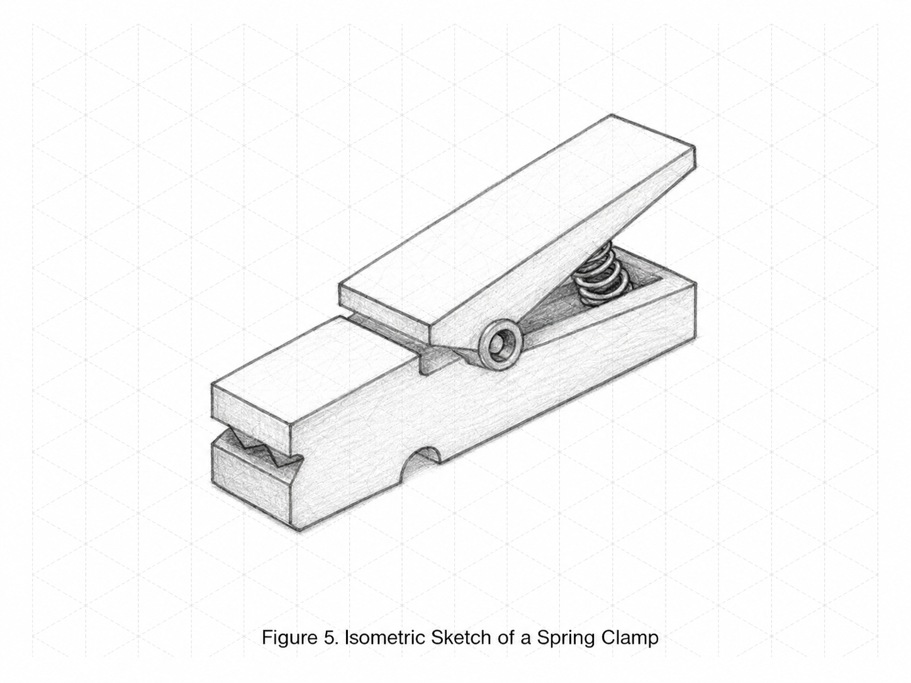

Rover Isometric Sketch
Concept sketching and visual communication
Open ImageStudents learn to communicate ideas using technical sketching, line conventions, isometric views, orthographic views, and basic dimensions.
| Lesson | Title | Focus Question |
|---|---|---|
| 1.1 | Why Engineers Sketch | Why do engineers sketch before they build or model in CAD? |
| 1.2 | Line Conventions | How do different types of lines help engineers communicate clearly? |
| 1.3 | Object Lines & Hidden Lines | How can a sketch show features that are part of an object but cannot be seen from one view? |
| 1.4 | Centerlines & Symmetry | How do engineers show the center of a feature or object in a technical sketch? |
| 1.5 | Isometric Sketching | How can engineers show a 3D object clearly on a flat page? |
| 1.6 | Isometric Circles, Arcs, and Shading | How can engineers show curved features and surface depth in an isometric sketch? |
| 1.7 | Orthographic Projection | Why do engineers use multiple 2D views instead of only one 3D sketch? |
| 1.8 | Top, Front & Right Side Views | How do engineers keep multiple views of the same object organized and accurate? |
| 1.9 | Dimensioning Basics | How do engineers show the size of an object clearly in a drawing? |
| 1.10 | Aerospace Bracket Sketch | How can engineers use sketches to communicate the shape, features, and size of a part before it is modeled or built? |
| 1.11 | Reverse Engineering Study and Unit 1 Portfolio Check | How can engineers learn from an existing object before designing something new? |
Original classroom images created for this unit. Use them in lesson pages, slides, practice prompts, and notebook examples.
Concept sketching and visual communication
Open Image
Width, height, depth, and isometric directions
Open Image
Surface value and 3D form
Open Image
Shading and pencil pressure practice
Open Image
Dimension and extension lines
Open Image
Dimension placement and feature callouts
Open Image
Front, top, and right-side views
Open Image
Applied bracket sketching
Open Image
Reverse engineering example object
Open ImageUse these resources with the Unit 1 lessons. Presentation files are intentionally not included here.
Linked resource for Unit 1 lesson work.
Open ResourceLinked resource for Unit 1 lesson work.
Open ResourceLinked resource for Unit 1 lesson work.
Open ResourceLinked resource for Unit 1 lesson work.
Open ResourceLinked resource for Unit 1 lesson work.
Open ResourceLinked resource for Unit 1 lesson work.
Open ResourceLinked resource for Unit 1 lesson work.
Open Resource